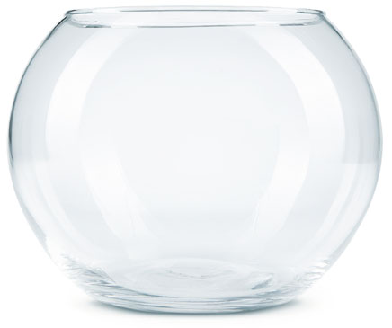

Рус
Eng
Facebook
Twitter
Vkontakte
Поделиться
Генератор водяных знаков

Настройки
Исходное изображение
Image.png
Водяной знак
Image.png
Положение
4 ячейки
1 ячейка
11
12
13
21
22
23
31
32
33
горизонтальная линия
вертикальная линия
12
Вверх
Вниз
12
Вверх
Вниз
Прозрачность
Сброс
Скачать